name:simpleBlack class: center, simpleBlack # Statistical Approaches to Viral Phylodynamics Luiz Max de Carvalho, Institute of Evolutionary Biology, University of Edinburgh Supervisors: Professor Andrew Rambaut and Dr. Darren Obbard <div class="l-grid"> <ul> <li class="l-col l-size1of4"> <div id="pan1"> 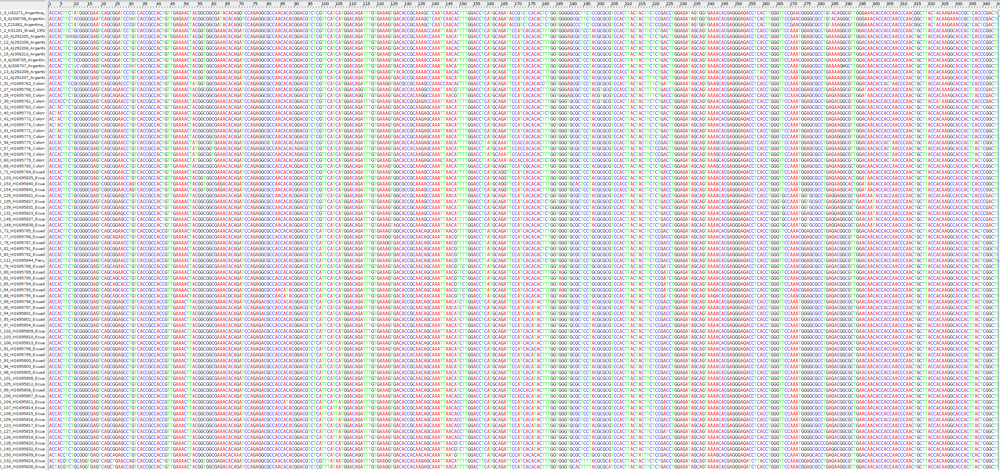 </div> </li> <li class="l-col l-size1of4"> <div id="pan2"> 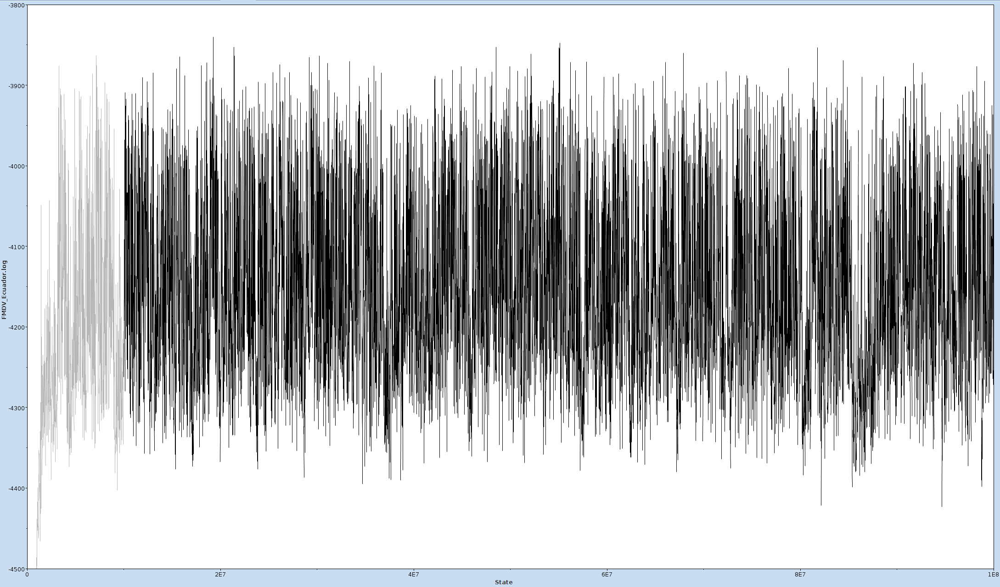 </div> </li> <li class="l-col l-size1of4"> <div id="pan3"> 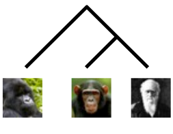 </div> </li> <li class="l-col l-size1of4"> <div id="pan3"> 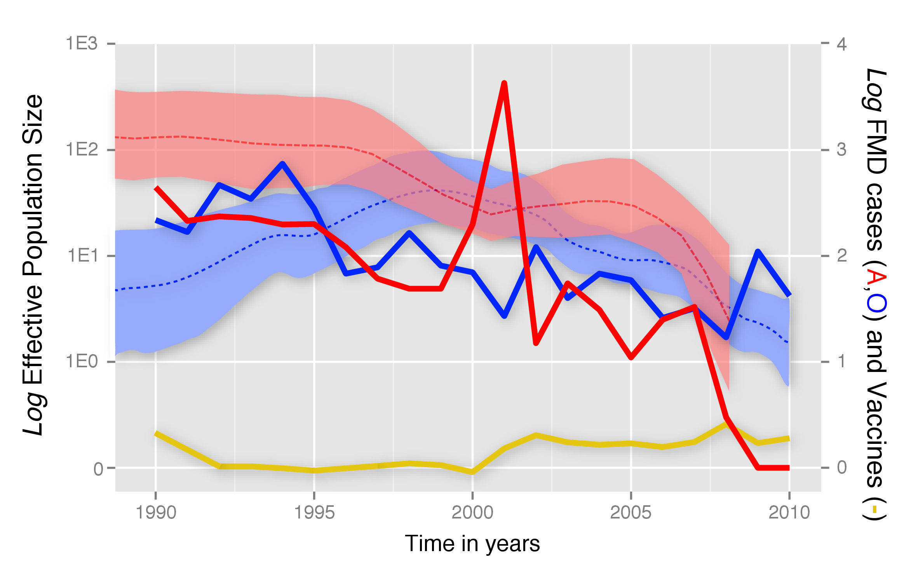 </div> </li> </ul> </div> --- class: simpleBlack # Plan for today 1. Motivation 2. Time signal in viral phylogenies 3. New time-tree proposals 4. Bayesian phylogenetics: proper priors --- class: simpleBlack # Viral Phylodynamics: an exciting prospect .left-column[ ### Useful! ] .right-column[ - Viral phylodynamics has been valuable in learning about epidemics; - Due to its integrative nature, several sources of .highlight[information] can be .highlight[combined] to draw .highlightR[inference]. - Can help us gain insight into evolutionary processes shaping epidemics, e.g., temporal dynamics, phylogeography, etc. ] --- class: simpleBlack # Viral Phylodynamics: an exciting prospect .left-column[ ### Useful! ### Challenging! ] .right-column[ - Makes use of complex models, posing a challenge to parameter estimation and hypothesis testing; - Data sets are growing in both size and complexity; - We need better and faster methods, otherwise... ] --- class: simpleBlack # Viral Phylodynamics: an exciting prospect .left-column[ ### Useful! ### Challenging! ] .right-column[ - Makes use of complex models, posing a challenge to parameter estimation and hypothesis testing; - Data sets are growing in both size and complexity; - We need .highlightR[better] and .highlightR[faster] methods, otherwise... .center[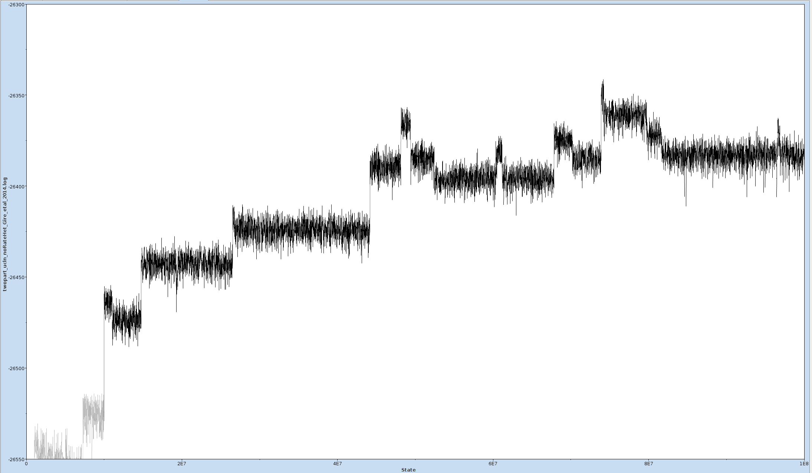] ] --- class: simpleBlack ## Time signal in viral phylogenies Problem: - Suppose you have built a phylogeny from sequences for which the collection date is known. - suppose further that these sequences come from a population that accumulates an appreciable number of mutations over the sampling span of the data (.highlight[measurably evolving]); Question: how to investigate whether this data contains .highlight[time signal], i.e., temporal distance translates into phylogenetic distance. .highlightR[Exploratory] approach: linear regression of root-to-tip divergences X sampling dates: .center[ <div class="l-grid"> <ul> <li class="l-col l-size1of2"> <div id="pan1"> 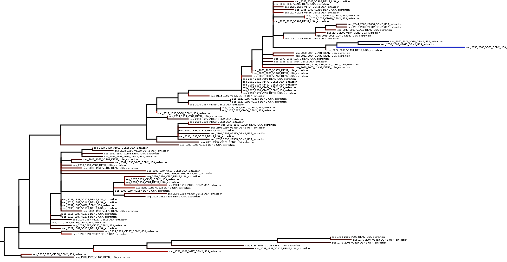 </div> </li> <li class="l-col l-size1of2"> <div id="pan2"> 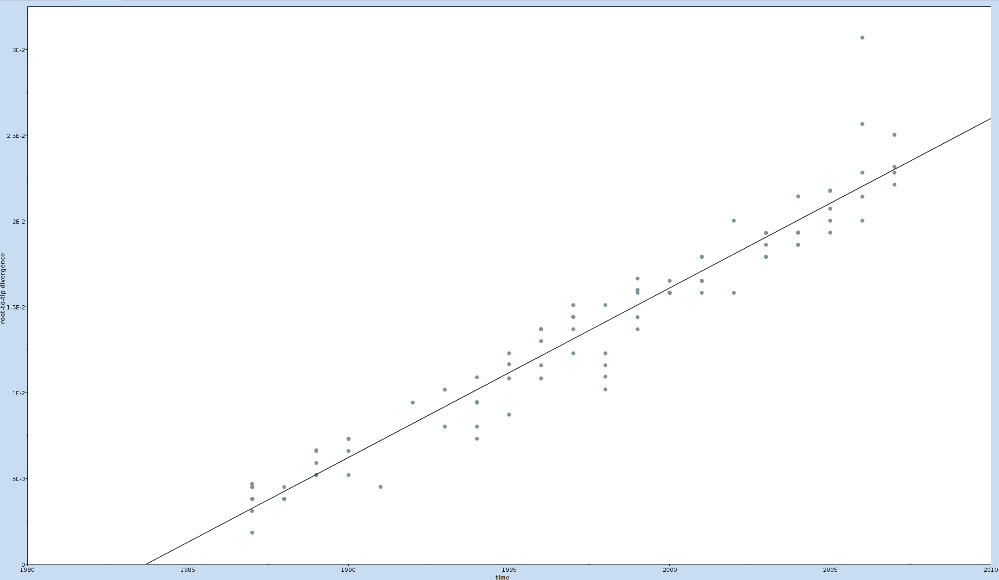 </div> </li> </ul> </div> ] --- class: simpleBlack # Time signal in viral phylogenies .left-column[ ### More analytic approaches ] .right-column[ - Temporal Clustering (TC) statistic ([Gray et al. 2011](http://www.ncbi.nlm.nih.gov/pubmed/?term=22121470)) - Quite useful, but has some fundamental flaws (manuscript in preparation); - Bayes factors: compare a model in which dates are included and one in which they are not; ] --- class: simpleBlack # Time signal in viral phylogenies .left-column[ #### More analytic approaches #### Sensitivity to model specification ] .right-column[ - How do the various models of sequence evolution capture time signal for various viruses? ] .center[ 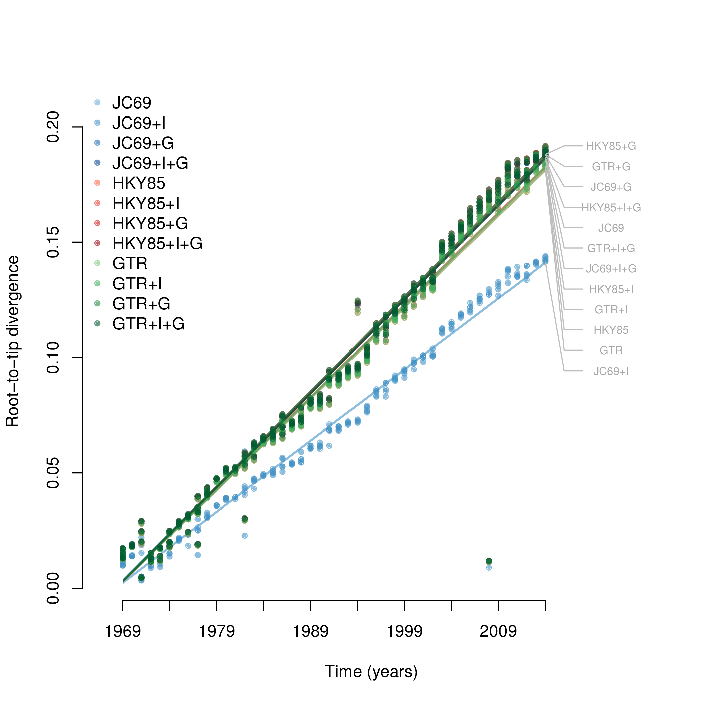 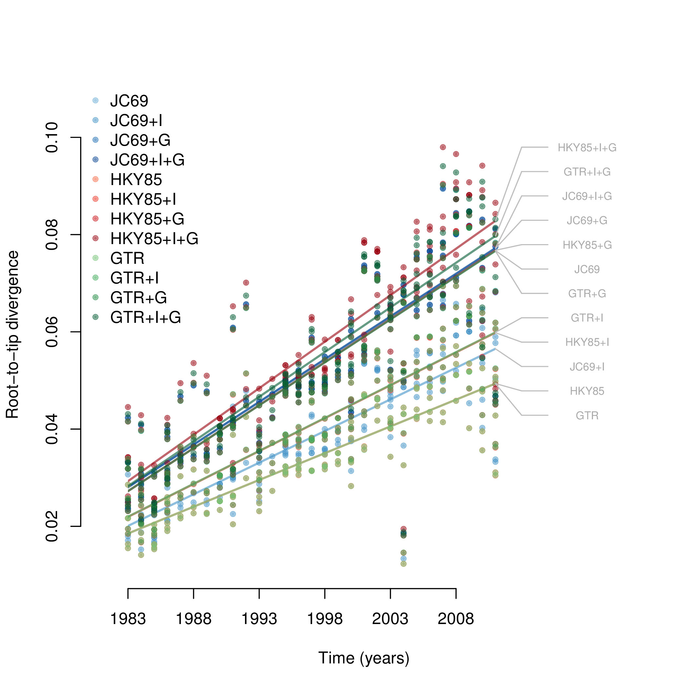 ] --- class: simpleBlack # Time signal in viral phylogenies: future work - Finish TC manuscript; - Run "partial trees" analysis: set of sequences -> add one at a time and estimate phylogenies -> plot against sampling time. - (Bayesian) posterior predictive checks for the tip dates, in the spirit of [Duchene et al. 2015](http://mbe.oxfordjournals.org/content/early/2015/07/10/molbev.msv154). --- class: simpleBlack ## Novel time-tree proposals for Bayesian phylogenetics - Phylogenetic inference is a hard problem; - You only need 53 taxa to have about as many possible trees as there are particles in the observable Universe! - We need to .highlight[efficiently] traverse tree space in order to obtain good estimates; - Efficiency needs to be defined not only in statistical terms, but also in terms of .highlight[wall clock] time; - There is a fundamental trade-off between time to convergence and computational cost; - More specifically, there is a trade off between autocorrelation and chain length. - One wishes to accept only a fraction of the proposed values; reject .highlightR[too many] and you are .highlightR[throwing away] computation effort, .highlightB[too few] and samples will be .highlightB[highly autocorrelated]. - This calls for the development of .highlight[tunable] proposals, that is, proposals whose variance/width can be adjusted to achieve a particular acceptance probability - Currently, only one of the topology-changing tree proposals in is tunable --- class: simpleBlack # SubTreeJump A .highlightR[height-preserving] move (proposal) that depends on tuning parameter α that controls the probability of moving to a node far away from the current position. .center[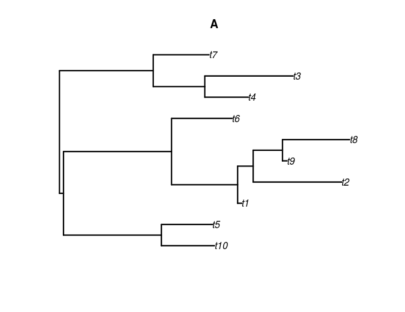] --- class: simpleBlack ### Novel time-tree proposals for Bayesian phylogenetics: future work - Initial tests seem to indicate STJ helps .highlightR[reduce time to burn-in]; - But a thorough empirical evaluation is lacking; - The framework of [Whidden & Matsen, 2015](http://www.ncbi.nlm.nih.gov/pmc/articles/PMC4395846/) seems promising; - STJ does not always produce an .highlight[irreducible] Markov chain; - Also, it may prove to be too .highlightR[local] and thus struggle to cross .highlightR[valleys] in tree space; - A more general move, dubbed .highlight[SubTree Leap] (STL) is being developed; - STL is not fixed-height, but induces an irreducible chain and can perform bigger moves while still being tunable; --- class: simpleBlack ## Bayesian phylogenetics: how good are your priors? Bayesian phylogenetics software such as [BEAST](http://beast.bio.ed.ac.uk/) or [Mr. Bayes](http://mrbayes.sourceforge.net/) depend on some default choices for the prior distributions. Since it is unrealistic to expect users to tweak their priors, it is necessary to use default priors that aim at being reasonable for most analyses/data sets. - Due to the complexity of phylogenetic models, sometimes a marginal prior that seems to make a lot of sense in reality can induce pretty unreasonable constraints on other variables - Here I illustrate this point by comparing the site-rate heterogeneity distributions induced by three priors on the Gamma heterogeneity parameter α .center[ <div class="l-grid"> <ul> <li class="l-col l-size1of2"> <div id="pan1"> 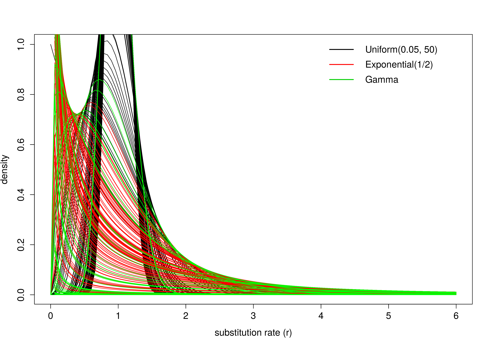 </div> </li> <li class="l-col l-size1of2"> <div id="pan2"> <img src="figures/rate_hyperpriors_Gini.png" width="300" height="300"/> </div> </li> </ul> </div> ] --- class: simpleBlack # Thanks! In special to Andrew, for the patience and support. An honourable mention to Gytis and Matthew. .center[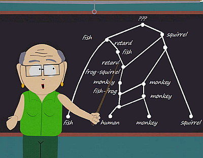] .footnote[created with [remark](https://github.com/gnab/remark)]